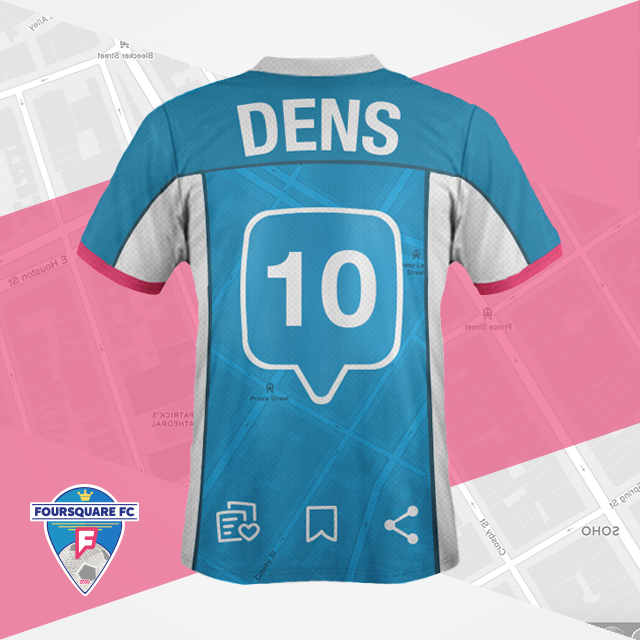
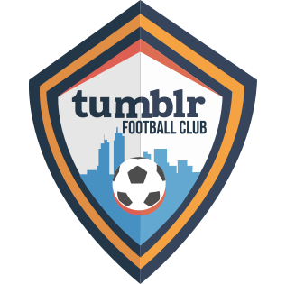
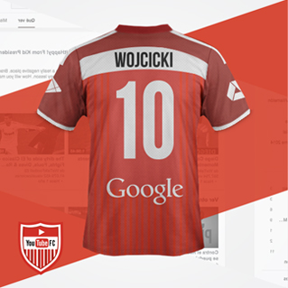

;){kind=link}


Fundación: 2009 - Presidente: Dennis Crowley - Sede: New York - Aficionados: 5 Millones
El equipo del mundo. No importa dónde estés, este equipo siempre está contigo.
Crowley y Selvadurai, sus presidentes, fueron menospreciados en 2009 de un equipo más grande, Google+. En el mismo 2009, fundaron Foursquare, conjunto que alcanzó 5 millones de seguidores en un año, entre los que abundan los villamelones que quieren relacionarse con otros equipos como Twitter y Facebook.
Con un valor de 600 millones de dólares, Foursquare sigue creciendo enormidades y logrando grandes patrocinios con empresas como Nike, Coca-Cola o Apple. Además, decidió diversificarse a través de la creación de Swarm, equipo hermano.



Fundación: 2005 - Presidente: Steve Huffman - Sede: Medford, Massachusetts - Aficionados: 178 Millones
Medford, Massachusetts lo vio nacer de la mano de Steven Huffman y Alexis Ohanian. Con 10 años en el mundo, Reddit no ha logrado tener el despunte deseado, pero es siempre un equipo constante.
Este equipo tiene una relación muy friendly con sus seguidores gracias a los cambios que hace en su escudo durante el receso de la liga. Lo adapta de manera aleatoria a cualquier tema 'geek' sin necesidad de una razón. Por ejemplo, se ha visto con la imagen de Star Wars, videojuegos y cultura en general.
Una escuadra cuyo estilo de juego se fundamenta en satisfacer los deseos de los aficionados y en premiar a aquellos jugadores que despliegan mejores acciones sobre el terreno de juego.


Fundación: 2013 - Presidente: Don Hofmann - Sede: San Francisco, California - Aficionados: 50 Millones
Su nombre viene de la palabra 'viñeta'. Con 50 millones de aficionados en el mundo, Vine logró, desde su fundación, posicionarse como uno de los equipos favoritos del orbe. Al ser un conjunto 'friendly' con sus seguidores y darles la oportunidad de compartir videos cortos, los oriundos de San Francisco California, han logrado conquistar a fans de Facebook, Twitter e Instagram…
Con un valor de 35 millones de dólares, el equipo turquesa puede darse el lujo de tener entre sus aficionados a famosos de todos los ámbitos como Josh Peck, Joe Jonas o Wiz Khalifa. Actualmente es 'hermano' de Twitter ya que el equipo celeste lo adquirió en 2012 por 30 millones de dólares.

Fundación: 2011 - Presidente: Larry Page - Sede: Mountain View, California - Aficionados: 300 Millones
Google está presente en todas partes. Teniendo un valor total de 107,430 millones de dólares, no se podía quedar con las ganas de fundar un equipo deportivo. Google+, en 4 años logró ser el segundo conjunto con más seguidores en el mundo, sumando una cantidad de 500 millones de fanáticos. Como todo equipo, también tiene sus opositores, quienes detestan al equipo por no aceptar a aficionados menores de 13 años.
El Clásico de Clásicos lo juegan contra Facebook por ser los dos más grandes de la Social Network Football League. Los círculos son símbolo característico de este equipo que llega a diversos países en 44 idiomas diferentes. Como dato curioso, el 43.88% del total de sus seguidores son solteros.



Fundación: 2007 - Presidente: David Karp - Sede: Nueva York - Aficionados: 230 Millones
David Karp fundó al equipo en 2007 en la ciudad de Nueva York, firmando un gran contrato de patrocinio con adidas desde el comienzo. Así, Tumblr estuvo desde el inicio en el gusto de la gente, logrando un valor comercial de 800 millones de dólares. Yahoo! es el actual propietario del equipo y se encuentra disponible en más de 30 idiomas.
También tiene sus episodios oscuros. En febrero de 2012, Tallulah Wilson, aficionada adolescente del equipo, se suicidó por el bullying recibido por otros seguidores del mismo equipo.
Fundación: 2012 - Presidente: Sean Rad - Sede: West Hollywood, California - Aficionados: 1.6 Millones
Rad, Mateen y Badeen fundaron al equipo en California. Todo empezó con un conjunto colegial en la Universidad del Sur de California. Al ver el éxito alcanzado, decidieron lanzar al equipo en primera logrando en tan sólo un año, la cantidad de 50 millones de aficionados.
Todos sus seguidores son solteros y acuden a su estadio con un sólo objetivo: poder conocer a una persona y tener una cita o de menos, poder verse en otra ocasión.
Con una afición regada en 30 países y un valor de 1.1 mil millones de dólares, Tinder está llamado a ser uno de los equipos grandes en el futuro.

Fundación: 2008 - Presidente: Uri Levine, Ehud Shabtai, Amir Shinar - Sede: Palo Alto, California - Aficionados: 50 Millones
Con Waze FC los aficionados siempre saben dónde están parados y tienen clara la dirección del club que, junto con Google+ y Youtube, buscan el dominio completo de la Social Media Football League.
Con un presupuesto de 1 billón de dólares y basado en la filosofía del crowdsource, este equipo define el rumbo del éxito gracias a las recomendaciones de sus 50 millones de usuarios.
Fundación: 2006 - Presidente: Dick Costolo - Sede: San Francisco, California - Aficionados: 284 Millones
280 millones de aficionados alrededor de todo el mundo respaldan su grandeza, la mayoría de ellos ‘millennials’. En un solo día han alcanzado 340 millones de interacciones entre el equipo y su gente. Con su mascota Larry, ha logrado conquistar al público femenino, haciendo que represente un 60% de su fanaticada total.
Con un valor de 11,000 millones de dólares, Twitter F.C. ha arrasado a nivel mundial, logrando que gente como Lady Gaga, Katy Perry o Justin Bieber, sean los que más hablan del conjunto azul.


Fundación: 2008 - Presidente: Daniel Ek - Sede: Estocolmo, Suecia - Aficionados: 60 Millones
El equipo de los hipsters. Pagando una suscripción al equipo podrás decidir, vía online, a qué jugadores alinear en cada partido. Con un modelo completamente friendly y sus más de 40 millones de aficionados, Spotify empieza a reclamar terreno con los equipos grandes.
El conjunto cuenta con la peculiaridad de pagar a los futbolistas sólo por los minutos que están en el campo, un modelo innovador que les ha permitido fichar a grandes estrellas. No importa si son los más rápidos, los más altos o los mejores del mundo, lo que el equipo necesita, lo tiene.

Fundación: 2005 - Presidente: Susan Wojcicki - Sede: San Bruno, California - Aficionados: 1 Billón
Uno de sus mayores logros fue haber conquistado al 78% de sus aficionados fuera de Estados Unidos, mientras el 22% restante se encuentra dentro de territorio norteamericano. La tarea no fue sencilla, sin embargo, fue posible gracias a que Google adquirió al equipo en 1,650 millones de dólares para poder ingresar al YouTube FC en las grandes ligas.
Con 2,000 millones de visitas, YouTube se posiciona con una de las mejores aficiones del mundo. Además, sus seguidores llegan a consumir 900 segundos diarios en información del equipo.



Fundación: 2011 - Presidente: Evan Spiegel - Sede: Venice, California - Aficionados: 100 Millones
El equipo más nuevo de la liga cuenta con el promedio de edad más bajo: 15 años. A pesar de su poco experiencia, Sanpchat Futbol Club ha tenido un crecimiento increíble en los últimos años.
Con un estilo de juego rápido y sencillo, Snapchat ha logrado cerrar grandes acuerdos comerciales que lo ubican como un equipo a seguir. Tiene grandes posibilidades de colarse en los primeros puestos. Las opulentas inversiones han hecho posible la llegada de nuevos jugadores que harán temblar a los “grandes” de la liga.


Fundación: 2004 - Presidente: Mark Zuckerberg - Sede: Silicon Valley, California - Aficionados: 1,366 Millones
Por su popularidad, el conjunto de Zuckerberg es considerado el más grande de la liga. Su afición supera los mil millones en todo el mundo, sin embargo, como todo equipo globalizado, en Estados Unidos cuenta con la mayor cantidad de seguidores. Si eres del resto del mundo, no te preocupes, representarás al 40% de fanáticos restantes.
Todos quieren jugar para Facebook pero pocos tienen ese placer. En palabras de su presidente, sólo ficharía a alguien para quien él mismo jugaría. Su filosofía no falla y sus números lo respaldan. El valor del equipo es de 80 mil millones de dólares.


Fundación: 2010 - Presidente: Kevin Systrom - Sede: Menlo Park, California - Aficionados: 300 Millones
Un equipo de casa, que desde pequeños hicieron a los fanáticos amar sus colores. Su entrenador, Kevin Systrom, estuvo a nada de fichar por Facebook FC, pero rechazó la oferta. Así fue como fundó este renovado equipo que en apenas un año logró 1 millón de seguidores. Sus afición está compuesta, en su mayoría, por jóvenes y residentes fuera de Estados Unidos.
Siendo un equipo sin filtros y original, han logrado posicionarse entre los llamados ‘grandes’, desbancando a Twitter con mayor cantidad de fanáticos.
Los domingos juegan de local, pues es cuando sus seguidores tienen mayor tiempo para verlos. Dato curioso. La mayoría de sus aficionados son mujeres.


Fundación: 2009 - Presidente: Jan Koum - Sede: Mountain View, California - Aficionados: 600 Millones
Jamás podrá desprenderse de la sombra de su hermano mayor, Facebook FC. A pesar de ser un equipo del pueblo que cuenta con 400 millones de aficionados, cuando WhatsApp se lo propone, hace contrataciones que sorprenden a todos gracias a un presupuesto que ascienden los 20,000 millones de dólares.
El cuidado con sus seguidores es primordial, por ello, han empezado a notificar a sus fans si habrá partido, dónde, cuándo, dejándoles un doble check in en azul en sus teléfonos móviles.


Fundación: 2010 - Presidente: Evan Spiegel - Sede: San Francisco, California - Aficionados: 70 Millones
Un conjunto relativamente nuevo con apenas cinco años en los terrenos de juego. Desde sus comienzos conquistó al público femenino, logrando así posicionarse entre los 50 equipos con mayor afición del mundo.
Un equipo localista, pero grande. 25.6 millones de aficionados llenan su estadio cada 15 días para poder disfrutar de los 500 mil jugadores con los que cuentan en su plantilla. ¿Cómo los consiguen? Gracias a los 338 millones de dólares que reciben a través de la iniciativa privada.


Fundación: 1996 - Presidente: Yair Goldfinger, Sefi Vigiser, Amnon Amir, Arik Vardi, Yossi Vardi - Sede: Moscú, Rusia - Aficionados: 1 Millones
Los aficionados del ICQ FC son aquellos pioneros que buscan marcar el rumbo de la historia con ideas revolucionarias. Son exclusivos, no conviven con otros aficionados y prefieren relacionarse con personas que tienen sus mismos valores.
Aunque se rumora que llegaron a contar con 100 millones de aficionados, sus números han decaído debido a su reticencia para adoptar nuevos modelos de juego.


Fundación: 1999 - Presidente: Bill Gates - Sede: Redmond, Washington - Aficionados: 300 Millones
Tras 14 años de éxito y con más de 300 millones de aficionados, Messenger, o MSN, se vio obligado a cerrar las puertas de su estadio. ¿La razón? Windows, su presidente fundador, decidió darle paso a las nuevas generaciones para lanzar la franquicia de Skype.
Con aficionados en 76 países alrededor del mundo, MSN se volvió en uno de los favoritos del orbe. Sus seguidores eran tan cercanos al equipo, que a diario, 40% de ellos estaban al pendiente de las novedades del conjunto originario de Redmond, Washington; sin mencionar que a diario entre sus fanáticos habían cerca de 1,500 millones de conversaciones y 9 mil millones de mensajes.


Fundación: 2003 - Presidente: Radu Yamalanchi - Sede: San Francisco, California - Aficionados: 75 Millones
Fundado por el americano, con descendencia hindú, Ramu Yamalanchi, hi5 se volvió un fenómeno viral del 2005. Con una afición de 80 millones de personas y su estadio en San Francisco, California, hi5 conquistó a la mayoría de sus seguidores en América Latina gracias a su versatilidad en idiomas.
Su caída inició en 2008 con la llegada de equipos poderosos como Facebook o Twitter, provocando su venta inmediata y cambiando de fin comercial. Actualmente es propiedad de Tagged sin encontrar rumbo para renacer. Llegó a ser el tercer equipo más seguido en el mundo…


Fundación: 2003 - Presidente: Timothy Vanderhook - Sede: Beverly Hills, California - Aficionados: 38 Millones
Con su estadio ubicado en Beverly Hills, California y una afición cercana a los 33 millones, MySpace fue el fenómeno de la década del 2000. Sus fundadores, Tom Anderson y Chris DeWolfe, hicieron que la popularidad de su equipo subiera como la espuma gracias a los diferentes artistas del momento que se hicieron fanáticos al equipo azul.
Dentro del inmueble del equipo podías encontrar a fanáticos como Britney Spears, Avril Lavinge o My Chemical Romance. La tecnología los alcanzó y empezaron a ver reducida su popularidad con el gigante Facebook. Tan grave fue la crisis que de 1,600 trabajadores que laboraban en 2009 con MySpace, su plantilla quedó en 200 personas.


Fundación: 2006 - Presidente: Esteban Kochen - Sede: Buenos Aires, Argentina - Aficionados: ???
Buenos Aires, Argentina lo vio nacer. Con gran popularidad en el inicio de la década de los 2000's entre los adolescentes, metroFLOG vio su auge con la afición de Latinoamérica. La nula respuesta ante la evolución de los gustos de la gente, hizo que este equipo gozara de muy poco tiempo en la cima de popularidad. Siguen en activo pero no son ni la sombra de lo que eran hace 10 años cuando no existían Instagram o Facebook.


¿A quién le vas?
Selecciona el club de tus amores y compártelo con tus amigos